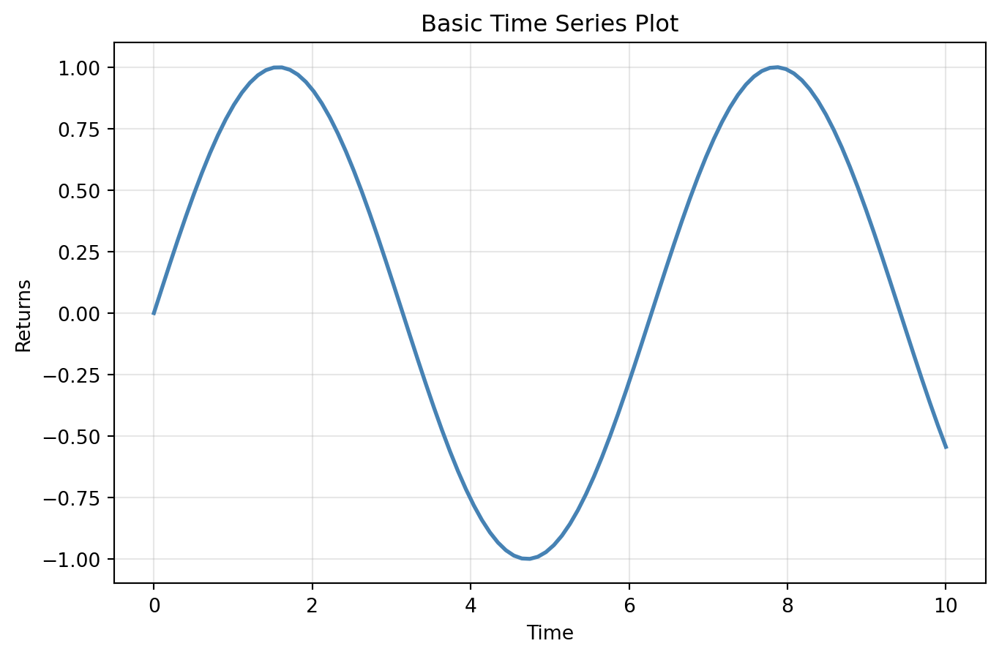
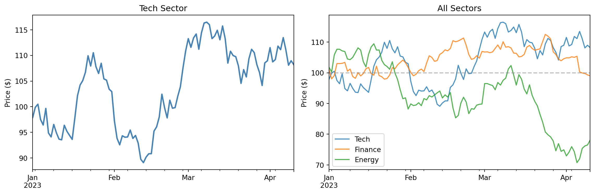
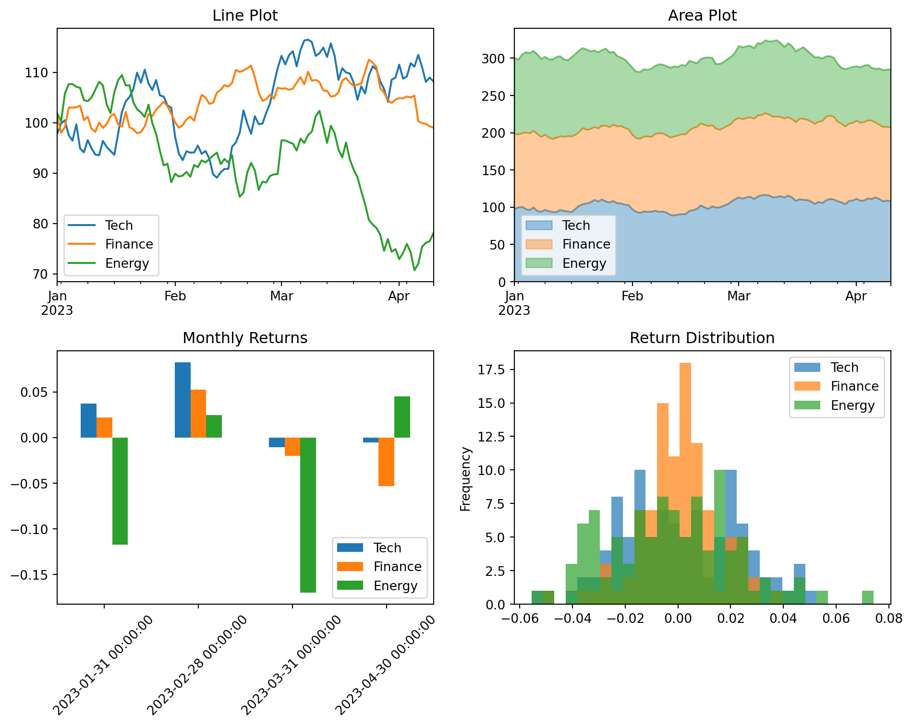
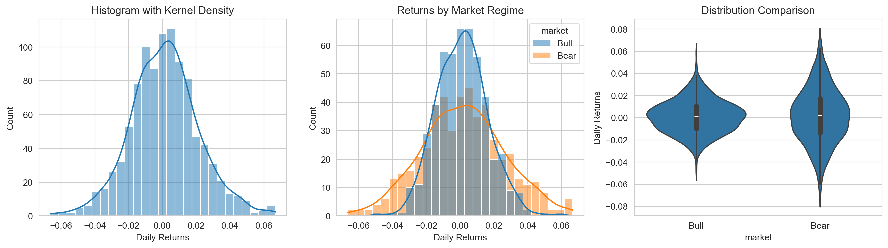
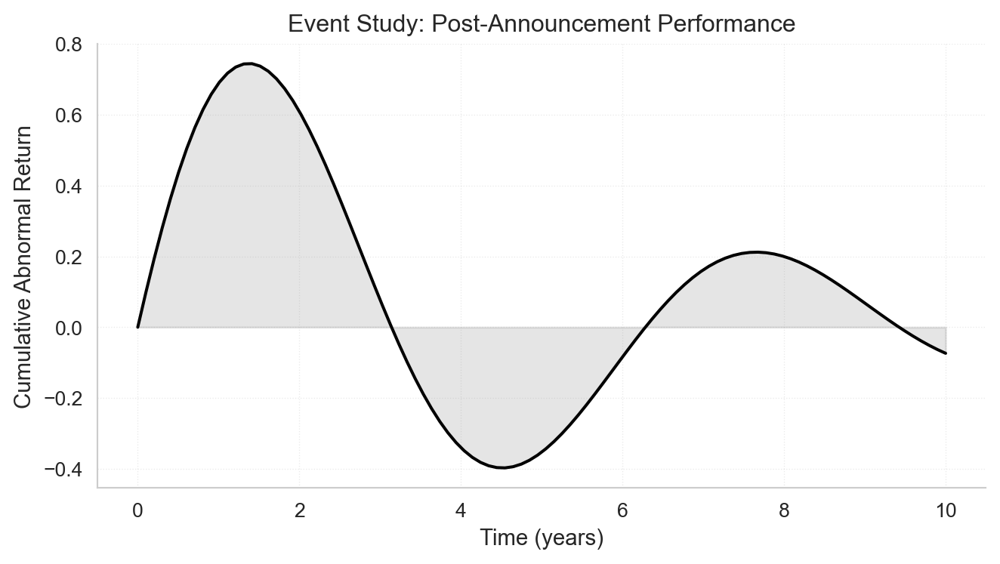
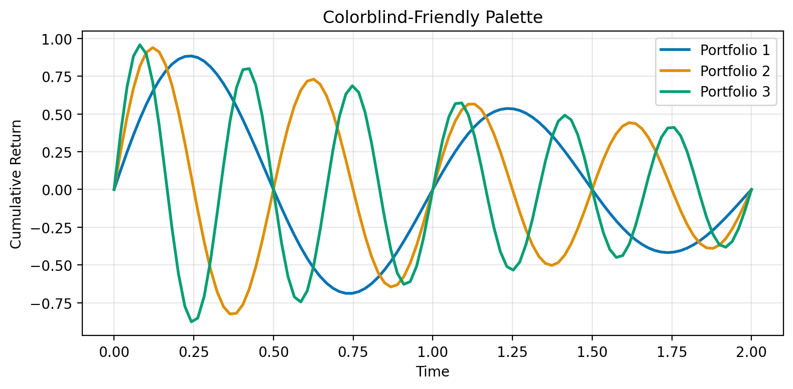
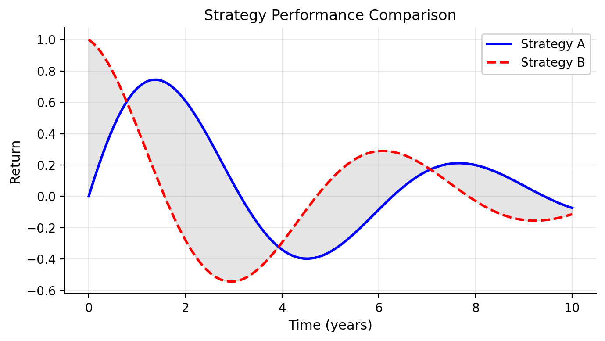

Effective visualization is essential in empirical finance. A well-crafted plot can reveal patterns in returns, expose outliers in trading data, or communicate regression results more clearly than pages of tables. This chapter introduces the core tools for creating publication-quality figures in Python: matplotlib for fine-grained control and seaborn for elegant statistical graphics.
We’ll focus on practical skills: understanding matplotlib’s architecture, using seaborn for exploratory analysis, and creating the kinds of plots you’ll need for academic papers—time series of stock prices and returns, distribution plots, and regression diagnostics. We’ll also cover how to export figures that meet journal standards for resolution and formatting.
17.1 Principles of Effective Data Visualization
Before diving into the technical tools, it’s worth considering what makes a visualization effective. The purpose of data visualization is to communicate information clearly and honestly. A good figure should reveal patterns in your data, support the conclusions you draw, and help your audience understand complex relationships quickly.
When creating visualizations for academic papers, keep these principles in mind:
Clarity over decoration: Resist the temptation to add visual flourishes that don’t convey information. Simple, clean figures are easier to interpret and reproduce.
Appropriate precision: Show uncertainty when it exists. Error bars, confidence intervals, and shaded regions can communicate the reliability of your estimates.
Honest scales: Start axes at zero when comparing magnitudes, use consistent scales across panels, and avoid truncating axes in ways that exaggerate differences.
Accessibility: Choose color palettes that remain distinguishable for colorblind readers, and ensure your figures are interpretable in grayscale for readers who print papers.
The tools we’ll cover in this chapter—matplotlib, pandas, and seaborn—give you the technical ability to create any visualization you need. The principles above will help you decide what to create and how to make it effective.
17.1.1 Recommended additional readings
Tufte (2001) established foundational principles for statistical graphics that remain influential today. His concept of data-ink ratio—the proportion of a graphic’s ink devoted to non-redundant display of data—encourages removing unnecessary visual elements (what he calls “chartjunk”) that distract from the data itself. While modern digital displays have made some of these concerns less pressing, the underlying principle holds: every visual element should serve a purpose.
Knaflic (2015) offers a more practical, business-oriented perspective on data visualization. Her framework emphasizes understanding your audience, choosing the right visual for your message, and eliminating clutter. She advocates for thoughtful use of pre-attentive attributes—visual properties like color, size, and position that our brains process almost instantly—to guide attention to the most important parts of your figure. For instance, using a single accent color to highlight a key data series while keeping everything else in muted gray immediately draws the viewer’s eye to what matters most.
Wilke (2019) provides comprehensive coverage of visualization types and when to use them. His book is particularly useful for understanding which plot types work best for different kinds of data: histograms and density plots for distributions, scatter plots for relationships, line plots for trends over time, and so on. He also addresses practical concerns like choosing color palettes that work for colorblind readers and in grayscale printing.
Rougier (2021) is a comprehensive guide to scientific visualization with Python and matplotlib. The book covers everything from basic plotting to advanced techniques for creating publication-quality figures, with a focus on the needs of researchers and scientists. It is freely available online at https://github.com/rougier/scientific-visualization-book.
17.2 Matplotlib Fundamentals
Matplotlib is the foundation of Python’s visualization ecosystem. While higher-level libraries like seaborn provide convenient interfaces, understanding matplotlib’s core concepts gives you the flexibility to create any visualization you need. For more details, see the Matplotlib User Guide.
17.2.1 The Figure and Axes Architecture
Matplotlib organizes plots into a hierarchy:
The Figure is the top-level container—the entire window or page where your plot lives
Each figure contains one or more Axes objects—these are the individual plots (despite the name, an Axes is a plot, not just the x and y axes)
Each Axes has x and y axis objects, titles, labels, and the actual plotted data
This separation gives you precise control over layout and appearance.
import matplotlib.pyplot as pltimport numpy as np# Create a figure and a single axesfig, ax = plt.subplots(figsize=(8, 5))# Generate sample datax = np.linspace(0, 10, 100)y = np.sin(x)# Plot on the axesax.plot(x, y, linewidth=2, color='steelblue')ax.set_xlabel('Time')ax.set_ylabel('Returns')ax.set_title('Basic Time Series Plot')ax.grid(True, alpha=0.3)plt.show()

The pattern fig, ax = plt.subplots() is the standard way to start a plot. It creates both the figure and axes explicitly, giving you handles to customize each component.
TipExplicit vs. Implicit Interface
Matplotlib has two interfaces: the pyplot interface (e.g., plt.plot()) and the object-oriented interface (e.g., ax.plot()). The pyplot interface is convenient for quick plots but maintains hidden state. For publication-quality work, prefer the object-oriented interface—it’s more explicit and gives you finer control.
17.2.2 Multiple Subplots
Financial analysis often requires comparing multiple series. You can create multiple axes in a grid:
The tight_layout() function automatically adjusts spacing to prevent labels from overlapping or being cut off. It’s good practice to call it before plt.show() or plt.savefig().
17.2.3 Common Plot Types
Matplotlib provides methods for all standard plot types. Here we demonstrate the most common ones.
Line plots are the workhorse of time-series visualization:
For most data analysis work, the pandas plot() method is the most convenient way to create visualizations. It provides a simple interface that works directly on DataFrames and Series, automatically handling index values, column labels, and legends. Under the hood, pandas uses matplotlib, so everything you’ve learned about customizing figures still applies.
17.3.1 Basic plotting with Series and DataFrames
When you call plot() on a pandas object, the index becomes the x-axis and the values become the y-axis:
import pandas as pd# Create a simple time seriesnp.random.seed(42)dates = pd.date_range('2023-01-01', periods=100, freq='D')returns = pd.Series(np.random.normal(0.001, 0.02, 100), index=dates)prices = (1+ returns).cumprod() *100# Basic plot - index is automatically used as x-axisprices.plot(figsize=(10, 4), title='Stock Price')plt.ylabel('Price ($)')plt.show()
With a DataFrame, each column becomes a separate line:
The pandas plot() method returns a matplotlib Axes object, allowing you to combine the convenience of pandas with full matplotlib customization. You can also pass an existing Axes to plot on:
fig, axes = plt.subplots(1, 2, figsize=(12, 4))# Plot on specific axes using the ax parameterprices_df['Tech'].plot(ax=axes[0], color='steelblue', linewidth=2)axes[0].set_title('Tech Sector')axes[0].set_ylabel('Price ($)')# Use the returned Axes for further customizationax = prices_df.plot(ax=axes[1], alpha=0.8)ax.set_title('All Sectors')ax.set_ylabel('Price ($)')ax.axhline(100, color='gray', linestyle='--', alpha=0.5)plt.tight_layout()plt.show()

17.3.3 Plot types
The pandas plot() method supports many plot types via the kind parameter:
fig, axes = plt.subplots(2, 2, figsize=(10, 8))# Line plot (default)prices_df.plot(ax=axes[0, 0], title='Line Plot')# Area plotprices_df.plot(kind='area', ax=axes[0, 1], alpha=0.4, title='Area Plot')# Bar plot - useful for comparing values at specific pointsmonthly_returns = returns_df.resample('ME').sum()monthly_returns.iloc[-6:].plot(kind='bar', ax=axes[1, 0], title='Monthly Returns')axes[1, 0].tick_params(axis='x', rotation=45)# Histogram of returnsreturns_df.plot(kind='hist', ax=axes[1, 1], bins=30, alpha=0.7, title='Return Distribution')plt.tight_layout()plt.show()

17.3.4 Why use pandas plotting?
For working with financial data in DataFrames, pandas plotting offers several advantages:
DateTime index handling: When your index is a DatetimeIndex, pandas automatically formats dates on the x-axis and handles gaps appropriately.
Column awareness: Each column becomes a separate series with automatic legend entries based on column names.
Less boilerplate: Common operations like creating legends and setting labels require less code.
Direct integration: You can chain plotting with other pandas operations like resample(), groupby(), and rolling().
When you need more control than pandas provides, you can always drop down to the matplotlib API by getting the Axes object and modifying it directly.
17.4 Seaborn for Exploratory Analysis
Seaborn is a statistical visualization library built on top of matplotlib. It provides a higher-level interface for creating attractive and informative graphics, with particular strengths in visualizing distributions and relationships in data. Seaborn integrates closely with pandas DataFrames, making it natural to visualize data directly from your analysis workflow. For a comprehensive introduction to seaborn’s capabilities, see An introduction to seaborn.
17.4.1 Distribution Plots
Understanding the distribution of returns or other financial variables is fundamental:
import seaborn as snsimport pandas as pd# Set seaborn stylesns.set_style("whitegrid")# Generate sample datanp.random.seed(42)n =500data = pd.DataFrame({'returns': np.concatenate([ np.random.normal(0.001, 0.015, n), np.random.normal(0.001, 0.025, n) ]),'market': np.concatenate([ ['Bull'] * n, ['Bear'] * n ])})# Create distribution plotsfig, axes = plt.subplots(1, 3, figsize=(14, 4))# Histogram with KDEsns.histplot(data=data, x='returns', kde=True, ax=axes[0])axes[0].set_title('Histogram with Kernel Density')axes[0].set_xlabel('Daily Returns')# Compare distributions across groupssns.histplot(data=data, x='returns', hue='market', kde=True, alpha=0.5, ax=axes[1])axes[1].set_title('Returns by Market Regime')axes[1].set_xlabel('Daily Returns')# Violin plot for detailed distribution comparisonsns.violinplot(data=data, x='market', y='returns', ax=axes[2])axes[2].set_title('Distribution Comparison')axes[2].set_ylabel('Daily Returns')plt.tight_layout()plt.show()

Seaborn automatically handles many details: choosing appropriate bin sizes, computing kernel density estimates, and creating legends for grouped data.
17.4.2 Relationship Plots
Exploring relationships between variables is central to finance research:
The annot=True parameter displays correlation coefficients directly on the heatmap—essential for publication-quality correlation tables.
17.5 Figure Design for Academic Papers
Academic journals have specific requirements for figures, and following these guidelines ensures your work meets professional standards and is accepted without revision requests for figure quality. Beyond technical requirements, well-designed figures communicate your results more effectively and make your paper more readable. Taking the time to polish your figures is one of the highest-return investments you can make when preparing a manuscript.
17.5.1 Figure sizing and resolution
For professional-looking figures, use vector formats (PDF, SVG) whenever possible since they scale perfectly at any size. When vector formats aren’t suitable—for example, with complex scatter plots containing thousands of points—use raster formats (PNG) with a minimum resolution of 300 DPI. Most journals specify figure widths: typically 3.5 inches for single-column figures and 7 inches for figures spanning two columns. Set your figure size in inches when creating the plot, so fonts and line weights appear at their intended size in the final document.
# Set publication-ready figure sizefig, ax = plt.subplots(figsize=(7, 4)) # 7 inches wide for double-column# Create a clean, professional plotx = np.linspace(0, 10, 100)y = np.sin(x) * np.exp(-x/5)ax.plot(x, y, 'k-', linewidth=1.5)ax.fill_between(x, 0, y, alpha=0.2, color='gray')ax.set_xlabel('Time (years)', fontsize=11)ax.set_ylabel('Cumulative Abnormal Return', fontsize=11)ax.set_title('Event Study: Post-Announcement Performance', fontsize=12, fontweight='normal')# Clean spinesax.spines['top'].set_visible(False)ax.spines['right'].set_visible(False)# Subtle gridax.grid(True, linestyle=':', alpha=0.4, linewidth=0.5)plt.tight_layout()plt.show()

17.6 Time-Series Plots
Time series are fundamental to finance. When your data has a DatetimeIndex, pandas handles most of the date formatting automatically, making it the preferred approach for time-series visualization.
17.6.1 Plotting stock prices
With a DatetimeIndex, plotting stock prices is straightforward using pandas’ plot() method:
When visualizing financial performance over time, you can plot either prices or cumulative returns—both convey similar information, but cumulative returns are normalized to start at an arbitrary value (typically 0% or 1), making it easier to compare assets with different price levels.
Cumulative returns show the total growth of an investment over time:
Daily returns show the day-to-day variation in returns. This type of plot is typically not very informative on its own—individual daily returns appear as noise—but it can be useful when you want to highlight the volatility of returns or identify periods of unusual activity:
Consistent styling across all figures in a paper creates a professional, polished appearance. Matplotlib provides several mechanisms for controlling the visual style of your plots, from built-in style sheets to fine-grained control over individual parameters. Equally important is choosing colors that work for all readers, including those with color vision deficiencies, and that reproduce well in both color and grayscale.
17.7.1 Using style sheets
Matplotlib’s style system lets you apply consistent formatting across all figures with a single command. The library includes many built-in styles, and you can create custom style files to match specific journal requirements or personal preferences. Using style sheets ensures that fonts, line weights, grid styles, and other visual elements remain consistent without manually setting each parameter.
# Available stylesprint("Available styles:", plt.style.available[:10]) # Show first 10# Use a clean, publication-ready styleplt.style.use('seaborn-v0_8-paper')fig, ax = plt.subplots(figsize=(7, 4))# Scatter with regression linenp.random.seed(42)x = np.random.normal(0, 1, 50)y =2*x + np.random.normal(0, 0.5, 50)ax.scatter(x, y, alpha=0.6, s=50)ax.plot(np.sort(x), 2*np.sort(x), 'r--', alpha=0.8, label='Fitted line')ax.set_xlabel('Factor')ax.set_ylabel('Return')ax.set_title('Factor Exposure')ax.legend()plt.tight_layout()plt.show()# Reset to defaultplt.style.use('default')
For consistency across a paper, consider creating a custom style file or setting rcParams at the start of your analysis script. Seaborn also provides its own style settings through sns.set_style() and sns.set_context(), which can be useful when combining seaborn and matplotlib plots.
17.7.2 Color schemes for accessibility
Effective color choices enhance clarity and ensure your figures are accessible to all readers. About 8% of men and 0.5% of women have some form of color vision deficiency, most commonly affecting the ability to distinguish red from green. Choosing colorblind-friendly palettes from the start means you won’t need to redesign figures later. Both matplotlib and seaborn offer built-in color palettes designed with accessibility in mind.
# Colorblind-friendly palettecolors_cb = ['#0173B2', '#DE8F05', '#029E73', '#CC78BC', '#CA9161']fig, ax = plt.subplots(figsize=(8, 4))# Multiple lines with accessible colorst = np.linspace(0, 2, 100)for i, color inenumerate(colors_cb[:3]): y = np.sin(2* np.pi * (i+1) * t) * np.exp(-t/2) ax.plot(t, y, color=color, linewidth=2, label=f'Portfolio {i+1}')ax.set_xlabel('Time')ax.set_ylabel('Cumulative Return')ax.set_title('Colorblind-Friendly Palette')ax.legend()ax.grid(True, alpha=0.3)plt.tight_layout()plt.show()

Seaborn provides several colorblind-friendly palettes through sns.color_palette(), including "colorblind", "deep", and "muted". For continuous data, prefer perceptually uniform colormaps like "viridis", "plasma", or "cividis" over rainbow colormaps like "jet", which can create misleading visual gradients and reproduce poorly in grayscale.
17.8 Exporting Publication-Quality Figures
The final step is saving your figures in formats suitable for journals and presentations.
17.8.1 Save Formats and Settings
Different output formats serve different purposes:
# Create a publication-ready figurefig, ax = plt.subplots(figsize=(7, 4))x = np.linspace(0, 10, 100)y1 = np.sin(x) * np.exp(-x/5)y2 = np.cos(x) * np.exp(-x/5)ax.plot(x, y1, 'b-', linewidth=2, label='Strategy A')ax.plot(x, y2, 'r--', linewidth=2, label='Strategy B')ax.fill_between(x, y1, y2, alpha=0.2, color='gray')ax.set_xlabel('Time (years)', fontsize=11)ax.set_ylabel('Return', fontsize=11)ax.set_title('Strategy Performance Comparison', fontsize=12)ax.legend(loc='upper right', framealpha=0.9)ax.grid(True, alpha=0.3)ax.spines['top'].set_visible(False)ax.spines['right'].set_visible(False)plt.tight_layout()# Save in multiple formats (commented out to avoid file creation)# High-resolution PNG for Word documents# plt.savefig('figure.png', dpi=300, bbox_inches='tight',# facecolor='white', edgecolor='none')# Vector PDF for LaTeX documents (preferred for publications)# plt.savefig('figure.pdf', format='pdf', bbox_inches='tight')# SVG for web or further editing# plt.savefig('figure.svg', format='svg', bbox_inches='tight')# Transparent background version# plt.savefig('figure_transparent.png', dpi=300, bbox_inches='tight',# transparent=True)plt.show()

TipBest Practices for Saving Figures
Use bbox_inches='tight': Automatically crops whitespace around the figure
Set dpi=300: Ensures high quality for print (journals typically require 300-600 DPI)
Save as PDF for LaTeX: Vector formats scale perfectly and meet most journal requirements
Keep originals: Save a Python script or Jupyter notebook with the code to regenerate figures
17.8.2 Format-specific considerations
Different output formats serve different purposes:
PDF (vector): Best for publications. Vector formats scale infinitely without quality loss and produce small file sizes for simple plots. PDF is required or preferred by most journals.
PNG (raster): Good for presentations and Word documents. PNG offers wide compatibility but has fixed resolution, so you should set dpi=300 or higher for print quality. File sizes can be larger for complex plots.
SVG (vector): Best for web and further editing. SVG files can be edited in vector graphics software like Inkscape or Adobe Illustrator, and they render well in modern browsers. However, SVG is not always accepted by journals.
17.8.3 Batch Saving Multiple Figures
When creating many figures for a paper, automate the export process:
# Example: Create and save multiple figures programmaticallydef save_figure(fig, filename, formats=['pdf', 'png']):""" Save figure in multiple formats with consistent settings. Parameters ---------- fig : matplotlib.figure.Figure The figure to save filename : str Base filename (without extension) formats : list of str List of formats to save ('pdf', 'png', 'svg') """for fmt in formats:if fmt =='png':# High-resolution PNG fig.savefig(f'{filename}.{fmt}', dpi=300, bbox_inches='tight', facecolor='white')else:# Vector formats fig.savefig(f'{filename}.{fmt}', format=fmt, bbox_inches='tight')print(f"Saved {filename} in formats: {', '.join(formats)}")# Example usage (commented to avoid file creation)# fig1, ax1 = plt.subplots(figsize=(7, 4))# ax1.plot([1, 2, 3], [1, 4, 9])# ax1.set_title('Figure 1: Results')# save_figure(fig1, 'paper_figure_1', formats=['pdf', 'png'])# plt.close(fig1)
NoteFigure Numbering and Organization
For paper submissions:
Name figures descriptively: Use names like returns_distribution.pdf rather than fig1.pdf. Avoid putting figure numbers in filenames—they cause friction when you reorder content.
Keep separate directories: Store figures in a figures/ or output/ directory
Version control: Commit your figure generation code, not the generated figures themselves. Output files can always be regenerated and clutter your repository.
Document parameters: Note DPI, dimensions, and any special requirements in your code
Knaflic, Cole Nussbaumer. 2015. Storytelling with Data: A Data Visualization Guide for Business Professionals. Wiley.
Rougier, Nicolas P. 2021. Scientific Visualization: Python + Matplotlib.
Tufte, Edward R. 2001. The Visual Display of Quantitative Information. 2nd ed. Graphics Press.
Wilke, Claus O. 2019. Fundamentals of Data Visualization: A Primer on Making Informative and Compelling Figures. 1st ed. Sebastopol, CA: O’Reilly Media.